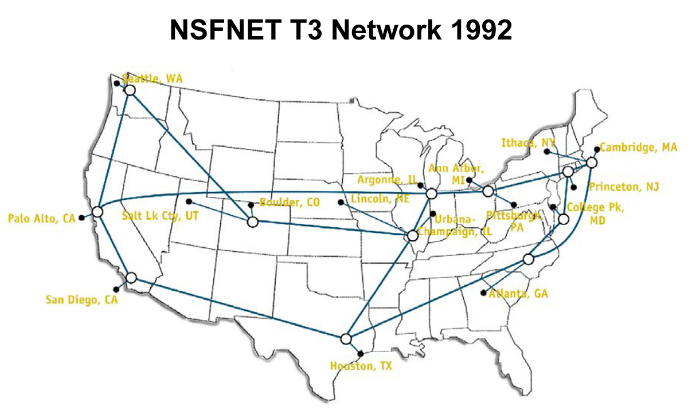

Réseau Libre
Réseau sans-fil communautaire | Infrastructure ouverte

reseaulibre.ca
@ReseauLibre @PeerProd @MathieuLutfy
Plan
- L'histoire de l'Internet en 5 minutes
- Motivations de Réseau libre
- Réseau maillé
- Gouvernance
- Défis


Courte histoire de l'Internet...
« routeur de paquets »


ARPANET 1970

http://www.vox.com/a/internet-maps
ARPANET 1973

http://www.vox.com/a/internet-maps
ARPANET 1982

http://www.vox.com/a/internet-maps
1984 : DNS

1991 : WWW
NFSNET 1992
http://www.vox.com/a/internet-maps
NFSNET 1993

http://www.vox.com/a/internet-maps
1994 : privatisation de NSFNET
- UUNet (Verizon/MCI), Sprint, AT&T, Level3
- NSFNET => Nanog
1994

1995 : https (SSL)


Internet était conçu pour être décentralisé
- Allocation IP (IANA)
- BGP
- DNS
- SSL
- Tier-1
Dans notre jeune temps...
Dans notre jeune temps...
- modem téléphoniques et BBS
- choix de fournisseur d'accès à Internet
- Fidonet, Usenet
- Réseaux adhoc, copy-party
Hackers (1990) vs Hackers (2000-2010)
- Réactions démesurées
- Incompréhension et perception de perte de contrôle
Communauté du libre au Québec
- FACIL / Linux-Québec (1997)
- Ile sans fil (~ 2000)
- Foulab (2008)
- Un Québec Branché sur le monde (UQBM)
- Communautique
- Réseau libre (2015-02-15)
Un réseau maillé? (TODO)
- independant ✔
- local ✔
- décentralisé ✔
- non-commercial ✔
Pourquoi ?
- Contrôle citoyen
- Services locaux
- Services d'urgences
- Sans censure
- Parce qu'on peut...
- ~30 noeuds
- ~20 bénévoles
- débuté en 2012
Politiques
- consensus
- propositions par courriels
- logiciels libres
5 libertés
- Free Network Foundation
- Participer
- Où les données sont stockées
- Avec qui partager
- Sans interférence
- Identité / anonymat
Picopeer agreement
- Transit libre
- Communication ouverte
- Aucune garantie
- Conditions d'utilisation
Comment ça marche ?
- réseaux sans fil "ad-hoc" 802.11n
- routage décentralisé avec Babel
- petites machines Ubiquity, TP-Link
- plein d'antennes sur les toits
IPv6 ?
- Adresses
- 128 bits séparés en 16 octets
- Octets groupés par 2
- Séparés par des ":"
- En hexadécimal
- Les "0" peuvent être consolidés (une fois)
- Supporte les adresses IPv4
- ::ffff:172.16.1.10
Source: http://www.flickr.com/photos/wrosgen/2614059100/
- Ces adresses sont toutes identiques:
fd64:2c08:9fa7:0000:0001:0000:0000:0001
fd64:2c08:9fa7::0001:0000:0000:0001
fd64:2c08:9fa7::1:0:0:1
fd64:2c08:9fa7:0:1::1- Préfixes IPv6:
- fc00::/8
- 2002::/3
- 2607:f2c0:f00f:2900::/56
- 3fff:ffff::/32
- ::1/128

Concrètement?
Source: http://www.flickr.com/photos/ampm/3481540472/